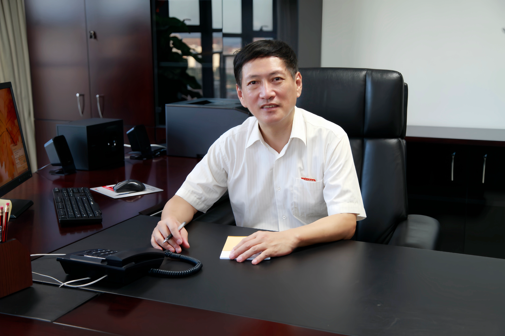
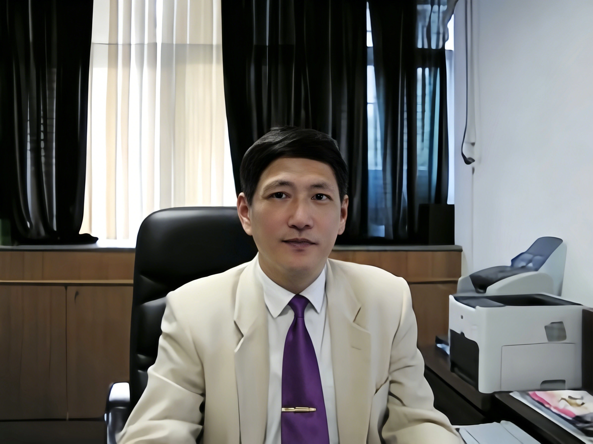
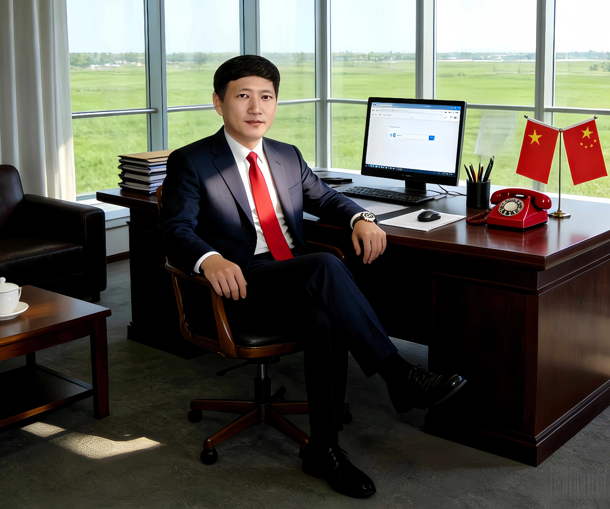

|
|
🏫 毕业院校福州大学
👨🏫 职称职位教授、福建理工大学副校长
🏆 荣誉国家科技进步二等奖、国家级精品课程负责人、福建省教学成果一等奖
📈 研究聚焦理论计算机科学、算法设计与复杂性分析、并行分布式算法
👨🔬 学术简介
王晓东，山东人，福建理工大学原副校长、教授，福建省计算机学会理事长。1982年2月（77级）毕业于福州大学数学系，1990年赴德国留学，1997年破格晋升教授。
长期从事计算机算法设计与分析、计算复杂性、信息安全、几何计算等方向研究，主持国家自然科学基金、优秀留学回国人员基金、省杰出人才基金等7项课题；发表学术论文50余篇，出版《算法设计与分析》等教材著作11部，4部为国家级十一五和十二五规划教材；获国家科技进步二等奖1项、省科技进步二等奖3项。主持国家级精品课程《算法与数据结构》《算法设计与分析》。
📌 代表性项目： 凸壳问题计算复杂性理论研究 · 国家自然科学基金大规模分布式算法课题
🫅 学术任职
- 福建省计算机学会理事长
- 原福州大学计算机系主任、数学与计算机学院院长
- 原泉州师范学院副院长
- 原福建理工大学副校长
🏅 主要荣誉
- 国家科技进步二等奖
- 福建省科技进步二等奖3项
- 福建省教学成果一等奖
- 国家级精品课程负责人



🔬 主持科研项目
- 国家自然科学基金（计算复杂性与几何算法）
- 国家优秀留学回国人员基金
- 福建省杰出人才基金
- 多项福建省自然科学基金项目
📚 专著 & 教材
- 出版算法类著作教材总计11部
- 著作教材入选普通高等教育“十一五”“十二五”国家级规划教材
- 《算法设计与分析》（清华出版社）国家级精品课主讲教材
- 发表学术论文50余篇
🏆 国家科技进步二等奖、多项福建省科技进步奖，算法理论成果被国内外权威文献引用
💡 主要贡献：分治算法、动态规划、几何计算、并行分布式算法、计算复杂性理论研究
📖 代表性学术论文
- On the Complexity of the Extreme Points Decision Problem, Information Processing Letters 40(10), 1991.[7]
- The Epsilon-Net Algorithm for the Closest Pair Problem, with Q. Fu, Chinese Journal of Numerical Mathematics and Applications, 18(2), 1996.[8]
- A Frame for Solving General Divide-and-Conquer Recurrences, with Q. Fu, Information Processing Letters, 59(1), 1996. [9]
- An Improved HEAPSORT Algorithm with Comparisons in the Worst Case, with Y. Wu, Journal of Computer Science and Technology, 22(6),2007. [10]
- On the Worst Case Data Sets for Order Satistics, Applied Mathematics & Information Sciences, 6( 2), 357-362, 2012. [11]
- A Simple Algorithm for Solving for the Generalized LCS Problem with Substring Exclusion Constraint, with D Zhu,Algorithms6(3), 2013.[12]
- A Dynamic Programming Solution to a Generalized LCS Problem, With L. Wang. Y. Wu and D. Zhu,Information Processing Letters113(1),2013. [13]
- A Comparative Study on the Algorithms for a Generalized Josephus Problem, i L. Wang Applied Mathematics & Information Sciences7(4), 2013, [14]
- An efficient dynamic programming algorithm for the generalized LCS problem with multiple substring exclusive constraints, with L. Wang. Y. Wu and D. Zhu,Journal of Discrete Algorithms26, 2014. [15]
- An Optimal Algorithm for the Weighted Median Problem, with D, Zhu, Journal of Computers9(2), 2014, [16]
- Complete Solutions for a Combinatorial Puzzle in Linear Time and Its Computer Implementation, with L. Wang. Y. Wu and D. Zhu,Applied Mathematics & Information Sciences8(4), 2014. [17]
- Efficient Algorithms for a Generalized Shuffling Problem, with L. Wang, and D. Zhu,International Journal of Computer Science41(4), 2014. [18]
- On the Maximal Number of Monochrome Nodes in the Dichromatic Balanced Trees, with D. Zhu, Applied Mathematics & Information Sciences4(3), 2015. [19]
- A Simple Polynomial Time Algorithm for the Generalized LCS Problem with Multiple Substring Exclusive Constraints, with D. Zhu,International Journal of Computer Science42(3), 2015. [20]
- An Efficient Dynamic Programming Algorithm for a New Generalized LCS Problem, with D Zhu International Journal of Computer Science43(2). 2016. [21)
- An Improved $O(Rllogllog n+n)$ Time Algorithm for Computing the Longest Common Subsequence, with D Zhu, International Journal of Computer Science44(2), 2017. [22)
- A Note on the Largest Number of Red Nodes in Red-Black Trees, with L. Wang, Y. Wu and D. Zhu, Journal of Discrete Algorithms43(1). 2017. [23)
- A space efficient algorithm for the longest common subsequence in SkS-length substrings, with L. Wang. T. Wang and D.Zhu,Theoretical Computer Science 687(1). 2017.(24)
- A simple linear space algorithm for computing a longest common increasing subsequence, with D. Cai, L. Wang, and D. Zhu,International Journal of Computer Science 45(3), 2018, [25]
- A Simple Linear Space Algorithm for Computing Nonoverlapping Inversion and Transposition Distance in Quadratic Average Time, with L. Wang, Journal of computational biology 25(6), 2018. [26]
📌 更多论文见于 Information Processing Letters、Theoretical Computer Science、Algorithms 等国际期刊。
📃 参考资料
- 百度百科-王晓东
- 福建理工大学官网校领导介绍
- 福州大学计算机学院师资历史资料
- 《算法设计与分析》清华大学出版社官方介绍
- 福建省计算机学会年度工作报告
- 国家精品课程算法与数据结构建设材料
- 福建省科学技术奖励公示文件
- 留学归国学者算法研究成果汇编
|
|
|